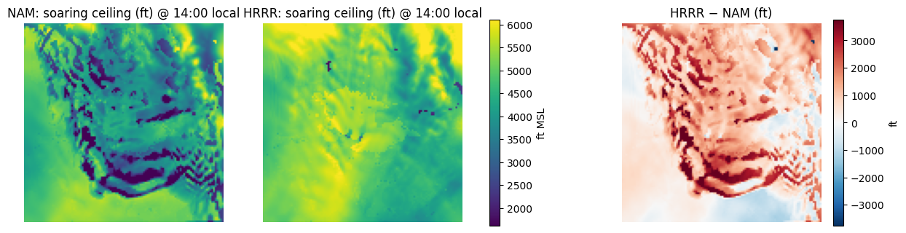
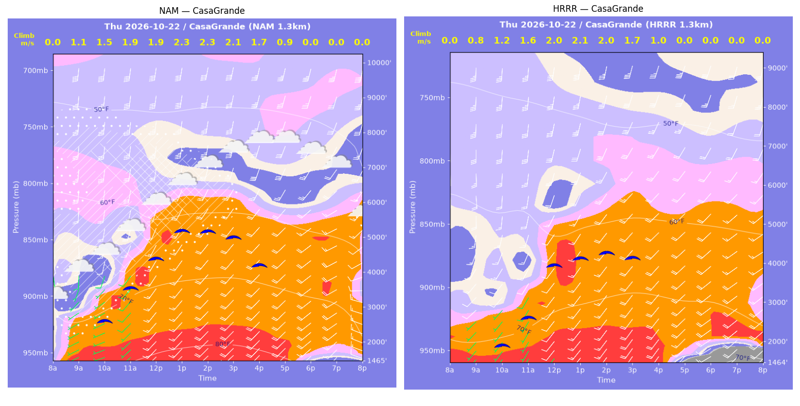
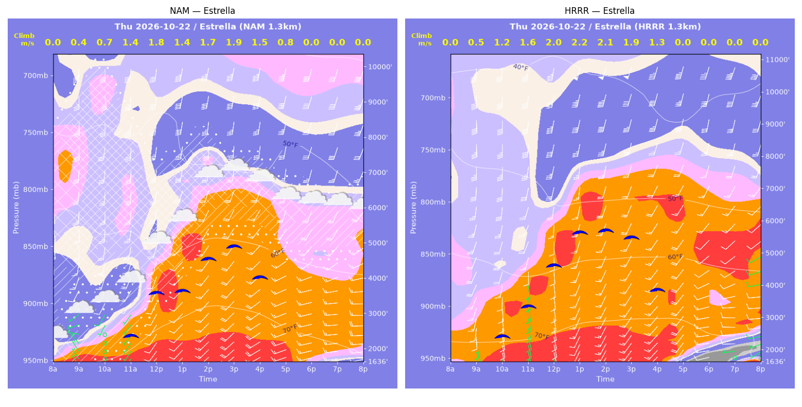
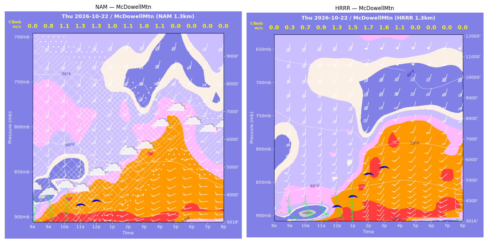
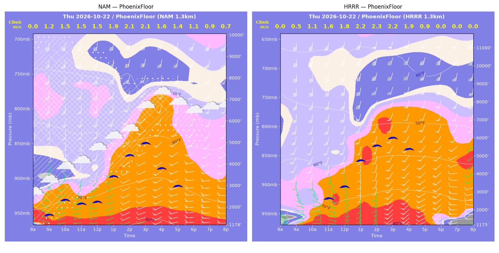
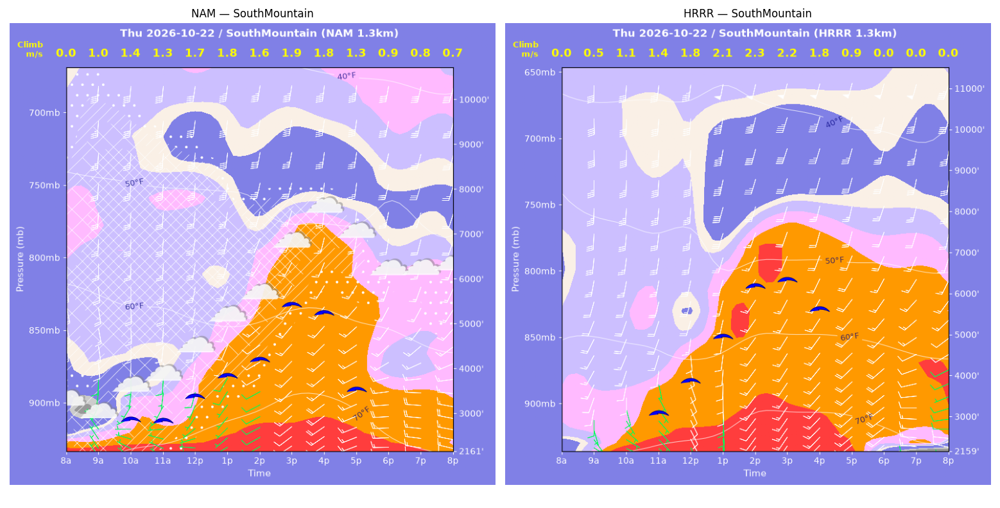
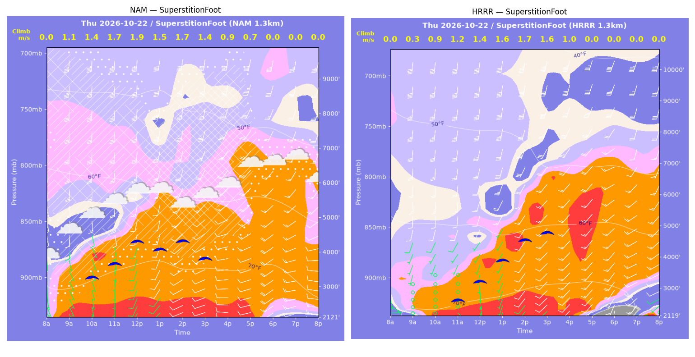
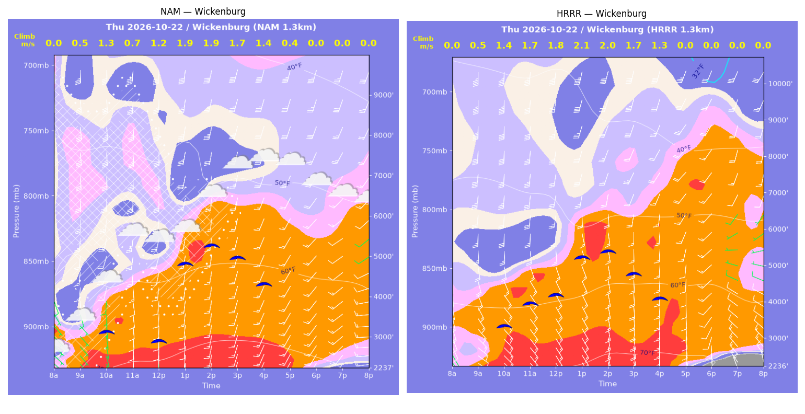

../runs/ab-phoenix-nam — model nam, cycle 2026-10-21 18z, dx 1.3333333740234374 km, 13 hours, grid 114×114../runs/ab-phoenix-hrrr — model hrrr, cycle 2026-10-21 18z, dx 1.3333333740234374 km, 13 hours, grid 114×114Grids identical; afternoon = 12:00–17:59 local (UTC-7). Δ = HRRR − NAM.
| Site | terrain ft | BL top (AGL) med|Δ| / bias (ft) | w* med|Δ| / bias (fpm) | Soaring ceiling med|Δ| / bias (ft) | BL wind speed med|Δ| / bias (kt) | BL wind dir med|Δ| / bias (deg) | 2 m temperature med|Δ| / bias (F) | Sfc LCL (AGL) med|Δ| / bias (ft) | Sensible heat flux med|Δ| / bias (W/m2) |
|---|---|---|---|---|---|---|---|---|---|
| PhoenixFloor | 1178 | 1487 / +1216 | 58 / +21 | 1228 / +711 | 3 / +3 | 6 / -9 | 1 / -1 | 21442 / +22499 | 25 / -6 |
| SouthMountain | 2161 | 1002 / +1135 | 59 / +33 | 984 / +554 | 2 / +2 | 7 / -7 | 1 / -1 | 21650 / +21609 | 36 / +17 |
| SuperstitionFoot | 2122 | 1149 / +684 | 33 / -25 | 201 / -7 | 4 / -0 | 16 / +4 | 4 / -4 | 17897 / +17943 | 23 / -14 |
| Estrella | 1637 | 1298 / +1313 | 66 / +7 | 799 / +756 | 4 / +5 | 7 / -6 | 1 / -1 | 22277 / +21918 | 45 / +6 |
| Wickenburg | 2238 | 430 / +259 | 31 / +15 | 203 / +236 | 3 / -2 | 3 / -2 | 2 / -2 | 18918 / +19170 | 26 / +39 |
| CasaGrande | 1466 | 1068 / -1182 | 59 / -72 | 859 / -980 | 7 / -6 | 17 / +15 | 4 / -6 | 21700 / +20909 | 51 / -26 |
| McDowellMtn | 3019 | 1627 / +1505 | 46 / +52 | 647 / +999 | 3 / +3 | 19 / -22 | 1 / -2 | 19340 / +19047 | 35 / +33 |
| Metric | n | median |Δ| | p90 |Δ| | bias |
|---|---|---|---|---|
| BL top (AGL) (ft) | 42 | 1114 | 1874 | +704 |
| w* (fpm) | 42 | 56 | 131 | +4 |
| Soaring ceiling (ft) | 42 | 882 | 1919 | +324 |
| BL wind speed (kt) | 42 | 4 | 8 | +1 |
| BL wind dir (deg) | 42 | 11 | 21 | -4 |
| 2 m temperature (F) | 42 | 1 | 5 | -2 |
| Sfc LCL (AGL) (ft) | 42 | 20379 | 22464 | +20442 |
| Sensible heat flux (W/m2) | 42 | 33 | 83 | +7 |
diffmap_tol.png| local | BL top NAM/HRRR ft | w* NAM/HRRR fpm | ceiling NAM/HRRR ft | BL wind NAM/HRRR | T2 NAM/HRRR F | HFX NAM/HRRR |
|---|---|---|---|---|---|---|
| 08:00 | 0 / 0 | 0 / 0 | 1178 / 1176 | 2kt@303 / 6kt@096 | 75 / 69 | 0 / 0 |
| 09:00 | 1915 / 457 | 233 / 102 | 1685 / 1176 | 1kt@249 / 7kt@076 | 76 / 73 | 103 / 36 |
| 10:00 | 2352 / 1449 | 297 / 211 | 2368 / 1176 | 6kt@188 / 8kt@108 | 78 / 75 | 175 / 101 |
| 11:00 | 2055 / 2861 | 292 / 309 | 2195 / 2688 | 6kt@189 / 9kt@166 | 78 / 77 | 189 / 161 |
| 12:00 | 2259 / 3575 | 289 / 357 | 2281 / 3314 | 11kt@198 / 15kt@196 | 79 / 79 | 168 / 200 |
| 13:00 | 3627 / 5335 | 379 / 435 | 3431 / 4732 | 17kt@202 / 24kt@198 | 81 / 80 | 236 / 243 |
| 14:00 | 4867 / 6467 | 422 / 445 | 4378 / 5532 | 21kt@213 / 20kt@205 | 82 / 81 | 244 / 216 |
| 15:00 | 5725 / 7099 | 418 / 443 | 4926 / 5946 | 21kt@215 / 22kt@197 | 83 / 83 | 202 / 194 |
| 16:00 | 4929 / 6795 | 307 / 367 | 3772 / 5315 | 16kt@210 / 22kt@193 | 83 / 82 | 93 / 115 |
| 17:00 | 3920 / 3353 | 275 / 169 | 2964 / 1176 | 15kt@229 / 15kt@224 | 81 / 81 | 84 / 23 |
| 18:00 | 2916 / 2849 | 210 / 0 | 1178 / 1176 | 14kt@256 / 19kt@227 | 79 / 77 | 50 / -7 |
| 19:00 | 2143 / 662 | 176 / 0 | 1178 / 1176 | 16kt@263 / 13kt@270 | 77 / 74 | 40 / -7 |
| 20:00 | 1793 / 354 | 144 / 0 | 1178 / 1176 | 16kt@272 / 9kt@271 | 76 / 70 | 26 / -2 |
| local | BL top NAM/HRRR ft | w* NAM/HRRR fpm | ceiling NAM/HRRR ft | BL wind NAM/HRRR | T2 NAM/HRRR F | HFX NAM/HRRR |
|---|---|---|---|---|---|---|
| 08:00 | 0 / 0 | 0 / 0 | 2161 / 2159 | 4kt@289 / 2kt@187 | 75 / 69 | 0 / 0 |
| 09:00 | 945 / 410 | 200 / 95 | 2161 / 2159 | 3kt@313 / 7kt@149 | 71 / 71 | 131 / 32 |
| 10:00 | 1742 / 1523 | 275 / 220 | 2951 / 2159 | 8kt@180 / 11kt@193 | 72 / 72 | 185 / 108 |
| 11:00 | 1837 / 2076 | 262 / 283 | 2925 / 3146 | 8kt@185 / 10kt@192 | 73 / 73 | 153 / 170 |
| 12:00 | 2327 / 2936 | 325 / 359 | 3454 / 3923 | 18kt@192 / 15kt@190 | 74 / 74 | 230 / 246 |
| 13:00 | 2916 / 4315 | 354 / 416 | 3895 / 4980 | 16kt@207 / 21kt@196 | 76 / 75 | 238 / 262 |
| 14:00 | 3826 / 5942 | 316 / 446 | 4233 / 6167 | 20kt@218 / 22kt@199 | 77 / 78 | 129 / 235 |
| 15:00 | 5289 / 6249 | 376 / 432 | 5432 / 6315 | 23kt@199 / 22kt@199 | 79 / 78 | 158 / 203 |
| 16:00 | 5109 / 5790 | 361 / 353 | 5243 / 5593 | 17kt@193 / 24kt@195 | 79 / 77 | 146 / 119 |
| 17:00 | 3379 / 4423 | 262 / 186 | 3560 / 2159 | 16kt@221 / 17kt@211 | 77 / 76 | 83 / 23 |
| 18:00 | 1736 / 2519 | 187 / 0 | 2161 / 2159 | 16kt@257 / 18kt@226 | 73 / 72 | 58 / -25 |
| 19:00 | 1617 / 976 | 166 / 0 | 2161 / 2159 | 15kt@266 / 12kt@270 | 72 / 70 | 44 / -19 |
| 20:00 | 1168 / 533 | 136 / 0 | 2161 / 2159 | 16kt@278 / 9kt@273 | 70 / 67 | 33 / -7 |
| local | BL top NAM/HRRR ft | w* NAM/HRRR fpm | ceiling NAM/HRRR ft | BL wind NAM/HRRR | T2 NAM/HRRR F | HFX NAM/HRRR |
|---|---|---|---|---|---|---|
| 08:00 | 0 / 0 | 0 / 0 | 2122 / 2119 | 3kt@128 / 6kt@081 | 73 / 68 | 0 / 0 |
| 09:00 | 1896 / 232 | 213 / 59 | 2122 / 2119 | 8kt@179 / 2kt@103 | 76 / 72 | 79 / 11 |
| 10:00 | 2505 / 1431 | 284 / 182 | 3317 / 2119 | 10kt@170 / 2kt@173 | 78 / 73 | 142 / 62 |
| 11:00 | 2798 / 1845 | 328 / 238 | 3690 / 2679 | 16kt@177 / 7kt@213 | 79 / 74 | 197 / 109 |
| 12:00 | 3561 / 2408 | 373 / 281 | 4313 / 3253 | 22kt@189 / 8kt@215 | 81 / 75 | 228 / 139 |
| 13:00 | 3894 / 3261 | 295 / 321 | 4076 / 3910 | 19kt@192 / 15kt@210 | 81 / 75 | 103 / 152 |
| 14:00 | 3795 / 4224 | 339 / 337 | 4305 / 4540 | 18kt@203 / 21kt@211 | 80 / 77 | 160 / 136 |
| 15:00 | 3840 / 4986 | 270 / 309 | 3805 / 4759 | 17kt@213 / 19kt@215 | 80 / 77 | 79 / 88 |
| 16:00 | 3070 / 4776 | 186 / 202 | 2122 / 2119 | 14kt@233 / 21kt@217 | 79 / 77 | 32 / 23 |
| 17:00 | 2481 / 5090 | 139 / 0 | 2122 / 2119 | 14kt@238 / 19kt@221 | 79 / 71 | 16 / -6 |
| 18:00 | 4394 / 929 | 0 / 0 | 2122 / 2119 | 16kt@219 / 19kt@213 | 76 / 64 | -4 / -6 |
| 19:00 | 1780 / 950 | 0 / 0 | 2122 / 2119 | 14kt@253 / 17kt@245 | 73 / 62 | -5 / -4 |
| 20:00 | 1135 / 83 | 0 / 0 | 2122 / 2119 | 10kt@279 / 4kt@047 | 71 / 61 | -9 / -3 |
| local | BL top NAM/HRRR ft | w* NAM/HRRR fpm | ceiling NAM/HRRR ft | BL wind NAM/HRRR | T2 NAM/HRRR F | HFX NAM/HRRR |
|---|---|---|---|---|---|---|
| 08:00 | 0 / 0 | 0 / 0 | 1637 / 1636 | 7kt@310 / 6kt@166 | 71 / 73 | 0 / 0 |
| 09:00 | 761 / 1197 | 78 / 108 | 1637 / 1636 | 4kt@271 / 11kt@190 | 71 / 74 | 9 / 15 |
| 10:00 | 1232 / 2483 | 147 / 245 | 1637 / 2491 | 9kt@213 / 15kt@196 | 72 / 75 | 39 / 91 |
| 11:00 | 1794 / 3259 | 273 / 317 | 2439 / 3407 | 12kt@214 / 15kt@200 | 74 / 76 | 173 / 152 |
| 12:00 | 3281 / 4746 | 363 / 391 | 3621 / 4640 | 19kt@196 / 22kt@192 | 77 / 77 | 226 / 196 |
| 13:00 | 4261 / 6033 | 284 / 430 | 3672 / 5639 | 18kt@209 / 26kt@188 | 78 / 79 | 83 / 206 |
| 14:00 | 5069 / 6199 | 337 / 417 | 4543 / 5690 | 18kt@196 / 25kt@193 | 81 / 79 | 117 / 182 |
| 15:00 | 5285 / 6302 | 372 / 365 | 4883 / 5463 | 22kt@187 / 24kt@196 | 81 / 79 | 151 / 120 |
| 16:00 | 4675 / 6250 | 299 / 247 | 4020 / 3844 | 18kt@199 / 23kt@200 | 79 / 78 | 88 / 37 |
| 17:00 | 2815 / 3734 | 155 / 0 | 1637 / 1636 | 15kt@236 / 18kt@216 | 76 / 73 | 19 / -20 |
| 18:00 | 2752 / 800 | 0 / 0 | 1637 / 1636 | 14kt@233 / 16kt@262 | 74 / 64 | -10 / -3 |
| 19:00 | 2276 / 83 | 0 / 0 | 1637 / 1636 | 15kt@248 / 2kt@142 | 72 / 63 | -10 / -1 |
| 20:00 | 1711 / 311 | 0 / 0 | 1637 / 1636 | 16kt@269 / 5kt@244 | 69 / 60 | -6 / -2 |
| local | BL top NAM/HRRR ft | w* NAM/HRRR fpm | ceiling NAM/HRRR ft | BL wind NAM/HRRR | T2 NAM/HRRR F | HFX NAM/HRRR |
|---|---|---|---|---|---|---|
| 08:00 | 0 / 0 | 0 / 0 | 2238 / 2236 | 5kt@131 / 7kt@142 | 67 / 68 | 0 / 0 |
| 09:00 | 1247 / 640 | 95 / 105 | 2238 / 2236 | 8kt@164 / 13kt@129 | 70 / 68 | 10 / 26 |
| 10:00 | 2316 / 2661 | 259 / 268 | 3175 / 3391 | 16kt@198 / 19kt@171 | 72 / 70 | 112 / 110 |
| 11:00 | 2539 / 3113 | 140 / 335 | 2238 / 4010 | 16kt@187 / 21kt@175 | 72 / 71 | 14 / 184 |
| 12:00 | 2819 / 3290 | 232 / 363 | 2951 / 4226 | 18kt@197 / 17kt@176 | 73 / 72 | 65 / 223 |
| 13:00 | 4214 / 4640 | 371 / 409 | 4823 / 5242 | 24kt@192 / 24kt@190 | 75 / 73 | 182 / 226 |
| 14:00 | 4909 / 4941 | 373 / 398 | 5259 / 5391 | 24kt@187 / 21kt@189 | 76 / 75 | 158 / 196 |
| 15:00 | 4767 / 4430 | 334 / 334 | 4947 / 4758 | 24kt@192 / 18kt@188 | 76 / 74 | 115 / 129 |
| 16:00 | 4754 / 5188 | 268 / 247 | 4295 / 4079 | 22kt@200 / 18kt@211 | 75 / 74 | 58 / 44 |
| 17:00 | 3954 / 4482 | 82 / 0 | 2238 / 2236 | 15kt@209 / 17kt@210 | 73 / 68 | -1 / -8 |
| 18:00 | 3796 / 658 | 0 / 0 | 2238 / 2236 | 16kt@222 / 11kt@181 | 70 / 60 | -8 / -10 |
| 19:00 | 1795 / 384 | 0 / 0 | 2238 / 2236 | 14kt@232 / 14kt@322 | 68 / 54 | -7 / -29 |
| 20:00 | 1456 / 457 | 0 / 0 | 2238 / 2236 | 15kt@265 / 14kt@326 | 67 / 52 | -15 / -28 |
| local | BL top NAM/HRRR ft | w* NAM/HRRR fpm | ceiling NAM/HRRR ft | BL wind NAM/HRRR | T2 NAM/HRRR F | HFX NAM/HRRR |
|---|---|---|---|---|---|---|
| 08:00 | 0 / 0 | 0 / 0 | 1466 / 1464 | 3kt@197 / 6kt@246 | 74 / 74 | 0 / 0 |
| 09:00 | 1621 / 1427 | 218 / 149 | 1466 / 1464 | 6kt@222 / 10kt@228 | 77 / 74 | 100 / 36 |
| 10:00 | 2374 / 1684 | 293 / 238 | 2650 / 1972 | 9kt@200 / 10kt@221 | 79 / 75 | 167 / 125 |
| 11:00 | 3462 / 2256 | 367 / 310 | 3576 / 2662 | 15kt@201 / 14kt@208 | 82 / 77 | 226 / 207 |
| 12:00 | 4790 / 3935 | 369 / 396 | 4391 / 3969 | 23kt@191 / 16kt@207 | 84 / 79 | 165 / 248 |
| 13:00 | 5413 / 4148 | 460 / 406 | 5163 / 4140 | 29kt@193 / 22kt@204 | 85 / 80 | 286 / 254 |
| 14:00 | 5441 / 4403 | 447 / 393 | 5137 / 4256 | 30kt@195 / 23kt@214 | 86 / 81 | 260 / 217 |
| 15:00 | 5405 / 4573 | 407 / 343 | 4959 / 4122 | 31kt@197 / 25kt@218 | 85 / 82 | 198 / 140 |
| 16:00 | 4872 / 3773 | 326 / 207 | 4179 / 1464 | 27kt@207 / 20kt@227 | 84 / 80 | 112 / 37 |
| 17:00 | 4451 / 2446 | 168 / 0 | 1466 / 1464 | 21kt@222 / 19kt@228 | 82 / 70 | 16 / -15 |
| 18:00 | 4598 / 592 | 0 / 0 | 1466 / 1464 | 19kt@229 / 18kt@235 | 78 / 59 | -15 / -12 |
| 19:00 | 2743 / 362 | 0 / 0 | 1466 / 1464 | 18kt@243 / 19kt@229 | 76 / 53 | -13 / -17 |
| 20:00 | 1898 / 373 | 0 / 0 | 1466 / 1464 | 11kt@270 / 19kt@228 | 73 / 49 | -4 / -25 |
| local | BL top NAM/HRRR ft | w* NAM/HRRR fpm | ceiling NAM/HRRR ft | BL wind NAM/HRRR | T2 NAM/HRRR F | HFX NAM/HRRR |
|---|---|---|---|---|---|---|
| 08:00 | 0 / 0 | 0 / 0 | 3019 / 3016 | 3kt@149 / 5kt@233 | 73 / 63 | 0 / 0 |
| 09:00 | 1090 / 260 | 151 / 65 | 3019 / 3016 | 6kt@176 / 3kt@089 | 70 / 65 | 45 / 14 |
| 10:00 | 1753 / 455 | 213 / 133 | 3019 / 3016 | 11kt@167 / 6kt@072 | 71 / 65 | 80 / 75 |
| 11:00 | 1777 / 792 | 256 / 181 | 3714 / 3016 | 13kt@191 / 6kt@151 | 72 / 67 | 138 / 110 |
| 12:00 | 2157 / 1934 | 254 / 255 | 3847 / 3768 | 12kt@208 / 13kt@203 | 73 / 69 | 111 / 128 |
| 13:00 | 1942 / 2507 | 200 / 287 | 3019 / 4234 | 14kt@216 / 15kt@197 | 72 / 70 | 59 / 141 |
| 14:00 | 2483 / 4034 | 219 / 331 | 3019 / 5296 | 18kt@221 / 26kt@201 | 72 / 72 | 60 / 134 |
| 15:00 | 2992 / 4867 | 203 / 311 | 3019 / 5606 | 16kt@228 / 21kt@195 | 73 / 72 | 38 / 91 |
| 16:00 | 3363 / 5066 | 220 / 224 | 3019 / 3016 | 15kt@230 / 16kt@217 | 73 / 72 | 43 / 31 |
| 17:00 | 1991 / 5549 | 0 / 0 | 3019 / 3016 | 17kt@242 / 21kt@198 | 72 / 69 | -8 / -20 |
| 18:00 | 2937 / 3213 | 0 / 0 | 3019 / 3016 | 15kt@237 / 17kt@216 | 69 / 63 | -18 / -15 |
| 19:00 | 2370 / 3355 | 0 / 0 | 3019 / 3016 | 15kt@245 / 15kt@225 | 68 / 60 | -18 / -9 |
| 20:00 | 2047 / 1233 | 0 / 0 | 3019 / 3016 | 15kt@253 / 10kt@271 | 66 / 58 | -18 / -7 |
montage_PhoenixFloor.pngmontage_SouthMountain.pngmontage_SuperstitionFoot.pngmontage_Estrella.pngmontage_Wickenburg.pngmontage_CasaGrande.pngmontage_McDowellMtn.png